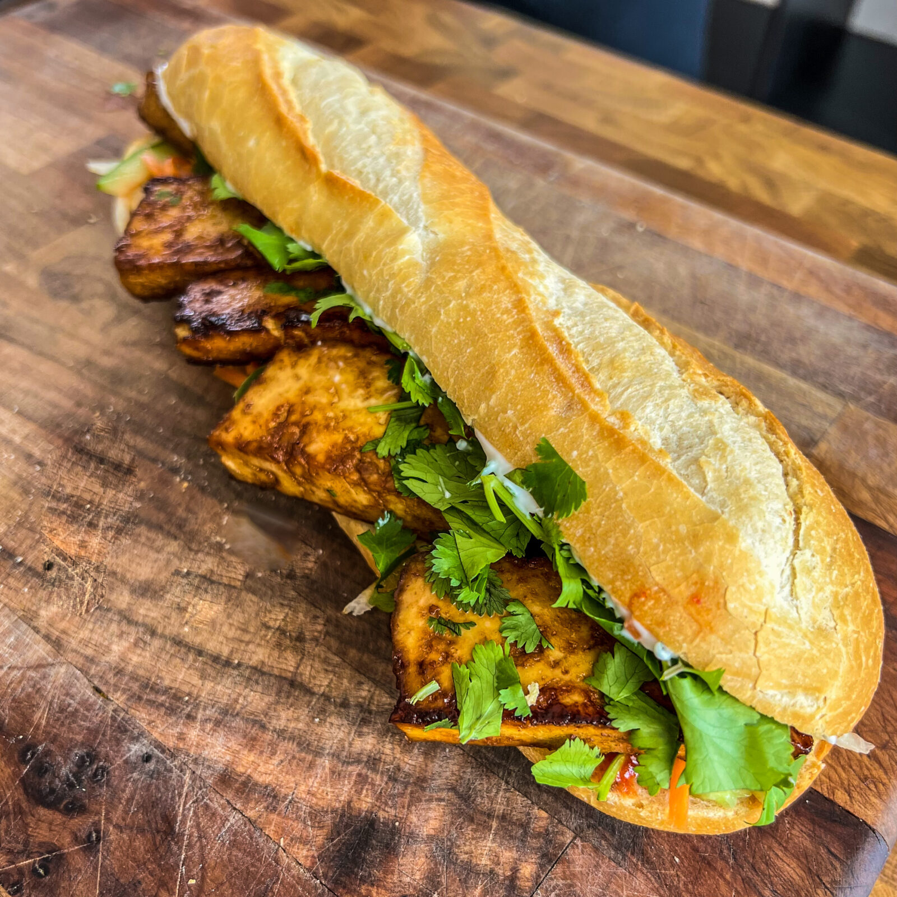

Bahn Mi

Tofu Bahn Mi
A vegan bahn mi made with tofu marinated in soy sauce, sesame oil, and rice vinegar.
We will prepare the carrots, onions, and jalapenos by pickling in a large mason jar
with sugar, white vinegar, and apple cider vinegar.
Last we will make a delicious sauce to top it all with vegan mayonaise, sriracha, hoisin sauce,
and a splash of soy sauce.
Put it all together on a fresh, warm baguette and your bahn mi is ready to go!
Ingredients
Tofu Marinate
- 1 block extra firm tofu
- 2 Tbsp Soy sauce
- 1 Tbsp Sesame oil
- 1Tbsp Rice vinegar
Pickled Veggies
- 2 Large carrots sliced into sticks
- 1 Jalapeno sliced in wheels
- 1/2 Red onion sliced into thin strips
- 3/4 Cup Sugar
- 1/4 Cup Apple cider vinegar
- 1 Cup White Vinegar
The Secret Sauce
- 1/4 Cup Vegan Mayonaise
- 1 Tbsp Sriracha
- 1 Tbsp Hoisin sauce
- 1 Tsp Soy Sauce
Steps
- Drain and press your block of tofu. I like to wrap mine in a clean hand towel and
sandwich it between two cutting boards with something with a bit of weight on top
to squeeze the excess liquid out. Let that press while you prepare the marinate.
- In a large ziploc bag combine the soy sauce, sesame oil, and rice vinegar.
- Slice your block of tofu into 1/2 inch thick slabs and gently place them in your
marinate. Take care to break them up as you're handling them.
- Set aside the tofu to marinate for at least an hour. Longer is better!
- Slice up your carrots, jalapeno, which may be seeded for less heat, and red onion and
add them all to a large, wide-mouth mason jar.
- Add in sugar, apple cider vinegar, and finally fill up the rest of the way with white
vinegar. There should be about 1/2 inch gap to the top of the jar. Pop on the lid and refridgerate
for at least an hour.
- Once the tofu has marinated, heat a pan over medium-high heat with 1 Tbsp of sesame oil.
- Carefully transfer a few pieces of the tofu at a time and fry them in the hot oil for about
7-8 minutes, flipping once partway through. They should be golden brown on both sides when done.
- Once all the tofu is cooked to crispy perfection, combine the sauce ingredients in a small dish and stir to mix.
- Slice your baguette and pile on the tofu, pickled veggies, and top with sauce!
- ENJOY!